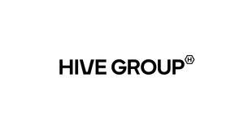

Trade Mark Journal No.2025/013 28 March 2025
UK00004144226 6 January 2025 (35,41,43,44)

- Class 35
- Business assistance, management and administrative services; Advertising, marketing and promotional services; Administrative support and data processing services; Business consultancy and advisory services; Business management for a trade company and for a service company; Consultancy regarding the organization or managing of a trade company; Company management [for others]; Business advisory services relating to company performance; Business organization consulting; Providing assistance in the field of business organisation; Personnel recruitment; Outsourcing services [business assistance].
- Class 41
- Health club services [health and fitness training]; Sports and fitness; Conducting fitness classes; Fitness club services; Sports training; Gym activity classes; Providing fitness and exercise facilities; Personal trainer services [fitness training]; Provision of health club [physical exercise] facilities; Physical education; Gymnasium services relating to weight training; Gymnasium services relating to body building; Gym activity classes; Gymnastic instruction; Coaching; Physical training services; Sports instruction services; Sports training; Training in yoga; Supervision of physical exercise.
- Class 43
- Bar and restaurant services; Providing food and drink in restaurants and bars; Provision of food and drink; Services for providing food and drink; Cafeteria services; Café services; Take-away food and drink services; food and drink catering; Services for the preparation of food and drink; Takeaway services; Providing drink services; Fast-food restaurant services; Serving food and drink in restaurants and bars; Serving of alcoholic beverages; Serving food and drinks; Preparation of meals; Pizza parlors; Snack-bar services; Preparation and provision of food and drink for immediate consumption; Tea rooms; Tapas bars; Salad bars; Pubs.
- Class 44
- Beauty salon services; Beauty spa services; Health counselling; massage; Health spa services; Hairdressing; beautician services; Skin care salon services; Nail salon services; Consultation services relating to beauty care; Aesthetician services; Beauty consultancy; Hair salon services; Beauty care; Consultancy services relating to beauty; Cosmetic treatment; Cosmetic body care services; Cosmetic analysis; Cosmetic and plastic surgery; Surgery (Cosmetic -); Facial beauty treatment services; Hygienic and beauty care; Cosmetic laser treatment of skin; Hair treatment; Manicuring; Application of cosmetic products to the face; Shampooing of the hair; Application of cosmetic products to the body; Hair restoration; Body art; Beauty care of feet; Beauty care for human beings; Hair cutting; Hair styling; Depilatory waxing; Consultancy in the field of body and beauty care; Barber services; Skin care salons; Providing information about beauty; Eyebrow dyeing services; Eyelash dyeing services; Hair dyeing services; Eyebrow tinting services; Eyelash tinting services; Cosmetic make-up services; Eyebrow shaping services; Manicure and pedicure services; Pedicurist services; Eyelash extension services; Make-up services; Services for the care of the face; Cosmetic treatment for the face; Cosmetic treatment for the body; Cosmetic treatment for the hair; Cosmetic treatment services for the body, face and hair; Advisory services relating to beauty treatment; Consultation services in the field of make-up; Tanning salons; Hair curling services.
KOSTIANTYN GANDZIUK
Representative: ip21 Limited